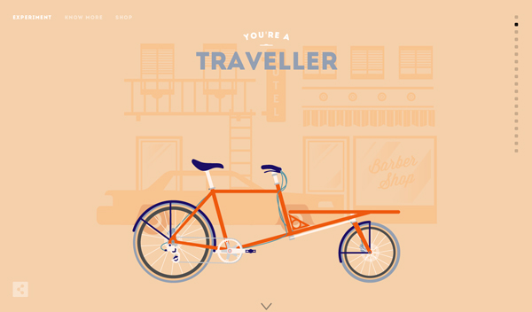
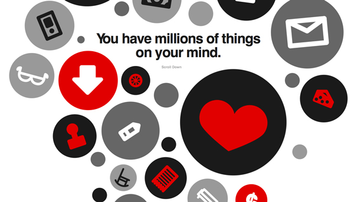

我们希望与您一起分享有关互联网的点点滴滴，我们希望在这里您能畅所欲言，百家争鸣，欢迎吐槽 :-)
21/11/13 Zo Liang
If you are an on-trend designer this is the time to jump on the flat design ship if you have not already. Projects using the style – and using it well – are getting a ton of recognition from blogs, including this one, that can help you promote your design.
05/08/13 Zo Liang
中文中文中文中文中文中文中文中文中文中文中文中文中文中文中文中文中文中文中文中文中文中文中文中文中文中文中文中文中文中文中文中文中文中文中文中文中文中文中文中文中文中文中文中文中文中文中文中文中文中文中文中文中文中文中文中文中文中文中文中文中文中文中文中文中文中文中文中文中文中文中文中文中文中文中文中文中文中文中文中文中文中文中文中文中文中文中文中文中文中文中文中文中文中文中文中文中文中文中文中文中文中文中文中文中文中文
Read More05/08/13 Zo Liang
中文中文中文中文中文中文中文中文中文中文中文中文中文中文中文中文中文中文中文中文中文中文中文中文中文中文中文中文中文中文中文中文中文中文中文中文中文中文中文中文中文中文中文中文中文中文中文中文中文中文中文中文中文中文中文中文中文中文中文中文中文中文中文中文中文中文中文中文中文中文中文中文中文中文中文中文中文中文中文中文中文中文中文中文中文中文中文中文中文中文中文中文中文中文中文中文中文中文中文中文中文中文中文中文中文中文
Read More05/08/13 Zo Liang
中文中文中文中文中文中文中文中文中文中文中文中文中文中文中文中文中文中文中文中文中文中文中文中文中文中文中文中文中文中文中文中文中文中文中文中文中文中文中文中文中文中文中文中文中文中文中文中文中文中文中文中文中文中文中文中文中文中文中文中文中文中文中文中文中文中文中文中文中文中文中文中文中文中文中文中文中文中文中文中文中文中文中文中文中文中文中文中文中文中文中文中文中文中文中文中文中文中文中文中文中文中文中文中文中文中文
Read More